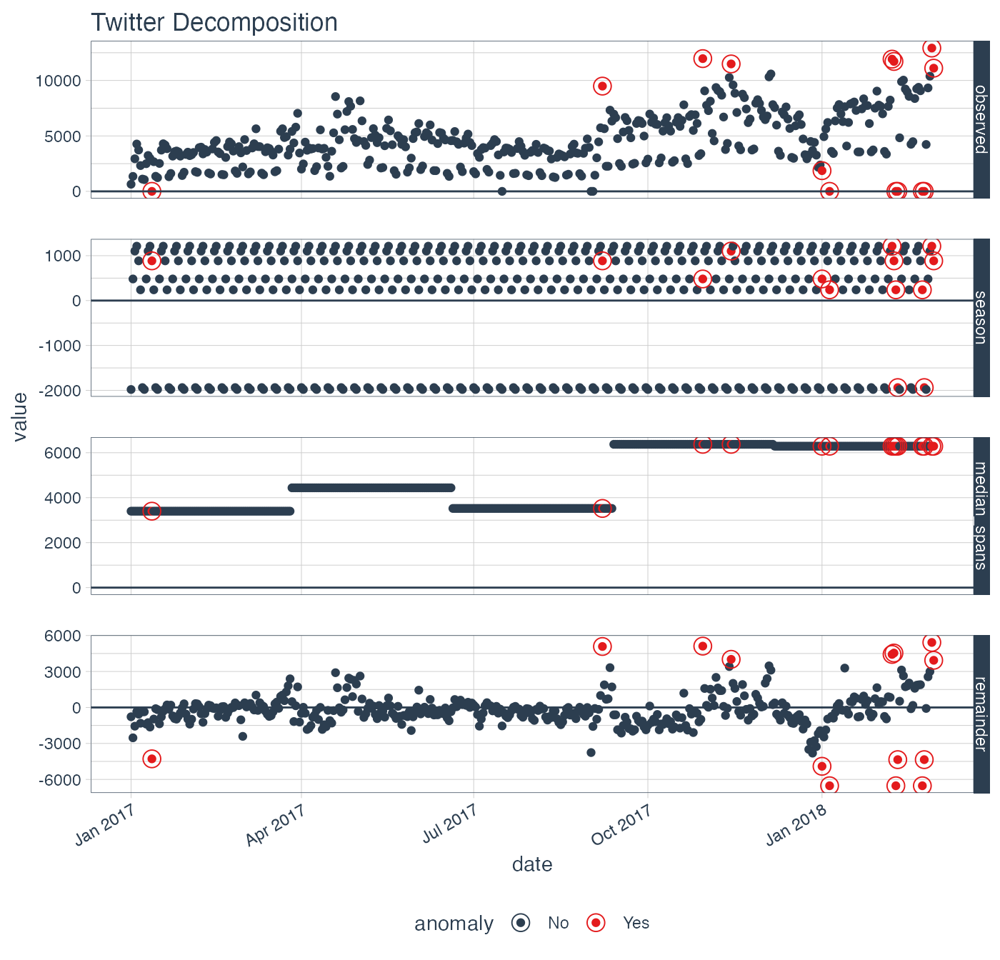
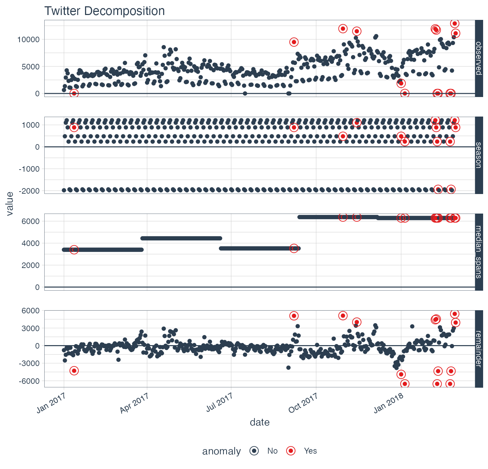
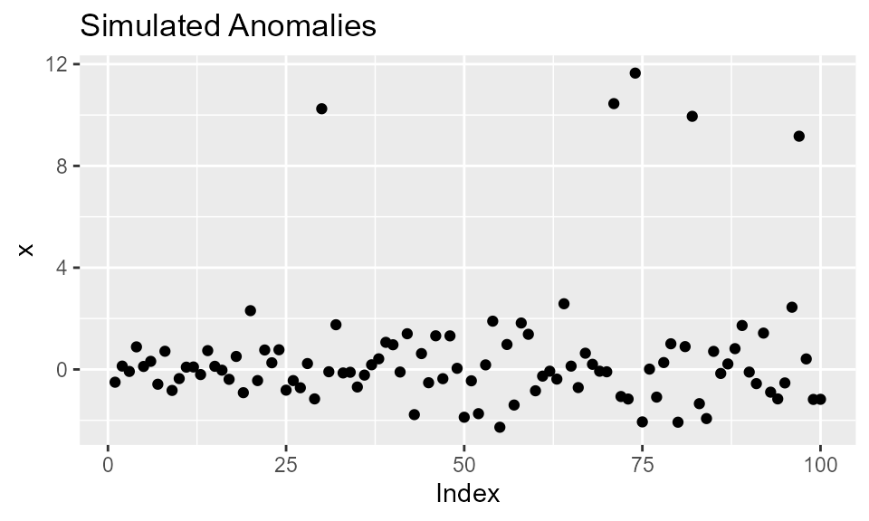
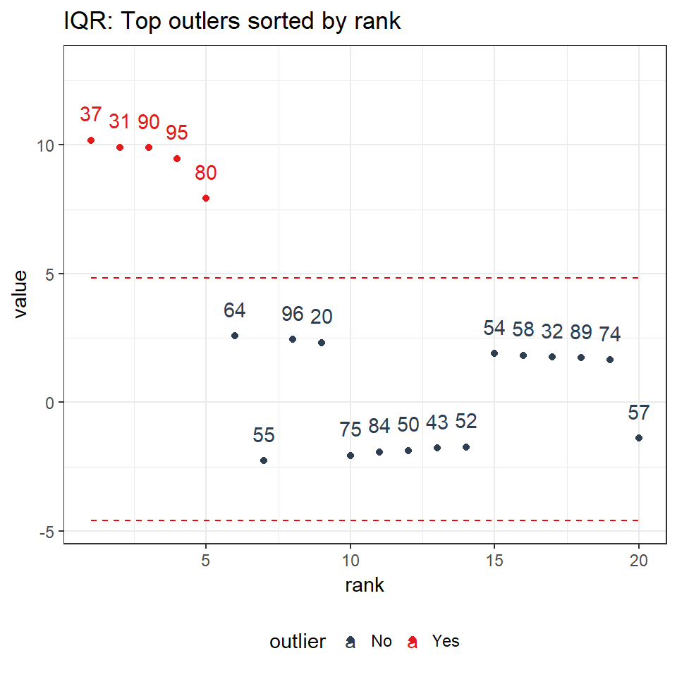
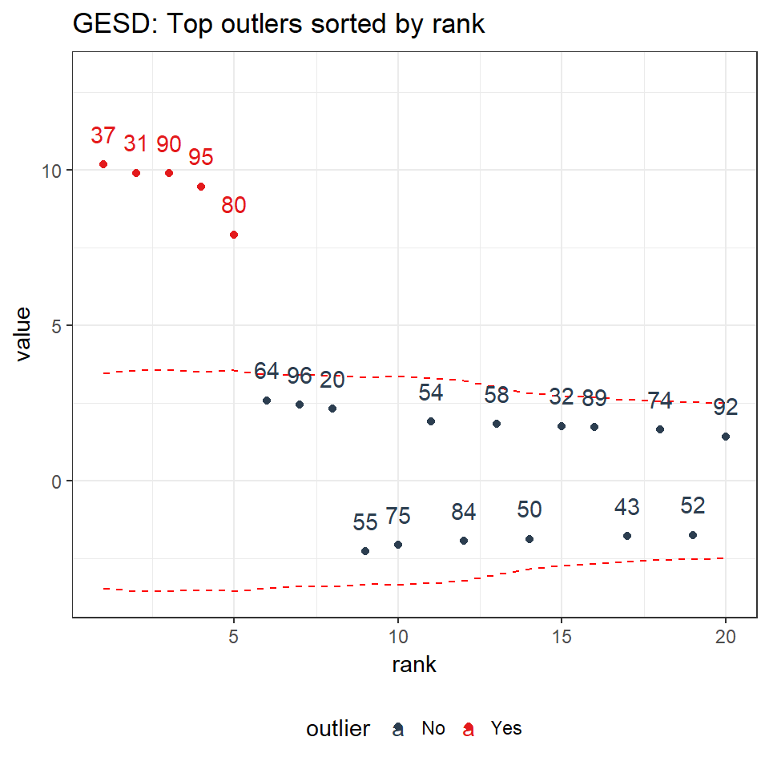

Anomaly detection is critical to many disciplines, but possibly none more important than in time series analysis. A time series is the sequential set of values tracked over a time duration. The definition we use for an anomaly is simple: an anomaly is something that happens that (1) was unexpected or (2) was caused by an abnormal event. Therefore, the problem we intend to solve with anomalize is providing methods to accurately detect these “anomalous” events.
The methods that anomalize uses can be separated into two main tasks:
- Generating Time Series Analysis Remainders
- Detecting Anomalies in the Remainders
1. Generating Time Series Analysis Remainders
Anomaly detection is performed on remainders from a time series analysis that have had removed both:
- Seasonal Components: Cyclic pattern usually occurring on a daily cycle for minute or hour data or a weekly cycle for daily data
- Trend Components: Longer term growth that happens over many observations.
Therefore, the first objective is to generate remainders from a time series. Some analysis techniques are better for this task then others, and it’s probably not the ones you would think.
There are many ways that a time series can be deconstructed to produce residuals. We have tried many including using ARIMA, Machine Learning (Regression), Seasonal Decomposition, and so on. For anomaly detection, we have seen the best performance using seasonal decomposition. Most high performance machine learning techniques perform poorly for anomaly detection because of overfitting, which downplays the difference between the actual value and the fitted value. This is not the objective of anomaly detection wherein we need to highlight the anomaly. Seasonal decomposition does very well for this task, removing the right features (i.e. seasonal and trend components) while preserving the characteristics of anomalies in the residuals.
The anomalize package implements two techniques for seasonal decomposition:
- STL: Seasonal Decomposition of Time Series by Loess
- Twitter: Seasonal Decomposition of Time Series by Median
Each method has pros and cons.
1.A. STL
The STL method uses the stl() function from the stats package. STL works very well in circumstances where a long term trend is present. The Loess algorithm typically does a very good job at detecting the trend. However, it circumstances when the seasonal component is more dominant than the trend, Twitter tends to perform better.
1.B. Twitter
The Twitter method is a similar decomposition method to that used in Twitter’s AnomalyDetection package. The Twitter method works identically to STL for removing the seasonal component. The main difference is in removing the trend, which is performed by removing the median of the data rather than fitting a smoother. The median works well when a long-term trend is less dominant that the short-term seasonal component. This is because the smoother tends to overfit the anomalies.
1.C. Comparison of STL and Twitter Decomposition Methods
Load two libraries to perform the comparison.
Collect data on the daily downloads of the lubridate package. This comes from the data set, tidyverse_cran_downloads that is part of anomalize package.
# Data on `lubridate` package daily downloads
lubridate_download_history <- tidyverse_cran_downloads %>%
filter(package == "lubridate") %>%
ungroup()
# Output first 10 observations
lubridate_download_history %>%
head(10) %>%
knitr::kable()| date | count | package |
|---|---|---|
| 2017-01-01 | 643 | lubridate |
| 2017-01-02 | 1350 | lubridate |
| 2017-01-03 | 2940 | lubridate |
| 2017-01-04 | 4269 | lubridate |
| 2017-01-05 | 3724 | lubridate |
| 2017-01-06 | 2326 | lubridate |
| 2017-01-07 | 1107 | lubridate |
| 2017-01-08 | 1058 | lubridate |
| 2017-01-09 | 2494 | lubridate |
| 2017-01-10 | 3237 | lubridate |
We can visualize the differences between the two decomposition methods.
# STL Decomposition Method
p1 <- lubridate_download_history %>%
time_decompose(count,
method = "stl",
frequency = "1 week",
trend = "3 months") %>%
anomalize(remainder) %>%
plot_anomaly_decomposition() +
ggtitle("STL Decomposition")
#> frequency = 7 days
#> trend = 91 days
# Twitter Decomposition Method
p2 <- lubridate_download_history %>%
time_decompose(count,
method = "twitter",
frequency = "1 week",
trend = "3 months") %>%
anomalize(remainder) %>%
plot_anomaly_decomposition() +
ggtitle("Twitter Decomposition")
#> frequency = 7 days
#> median_span = 85 days
# Show plots
p1
p2 

We can see that the season components for both STL and Twitter decomposition are exactly the same. The difference is the trend component:
STL: The STL trend follows a smoothed Loess with a Loess trend window at 91 days (as defined by
trend = "3 months"). The remainder of the decomposition is centered.Twitter: The Twitter trend is a series of medians that are removed. The median span logic is such that the medians are selected to have equal distribution of observations. Because of this, the trend span is 85 days, which is slightly less than the 91 days (or 3 months).
1.D. Transformations
In certain circumstances such as multiplicative trends in which the residuals (remainders) have heteroskedastic properties, which is when the variance changes as the time series sequence progresses (e.g. the remainders fan out), it becomes difficult to detect anomalies in especially in the low variance regions. Logarithmic or power transformations can help in these situations. This is beyond the scope of the methods and is not implemented in the current version of anomalize. However, these transformations can be performed on the incoming target and the output can be inverse-transformed.
2. Detecting Anomalies in the Remainders
Once a time series analysis is completed and the remainder has the desired characteristics, the remainders can be analyzed. The challenge is that anomalies are high leverage points that distort the distribution. The anomalize package implements two methods that are resistant to the high leverage points:
- IQR: Inner Quartile Range
- GESD: Generalized Extreme Studentized Deviate Test
Both methods have pros and cons.
2.A. IQR
The IQR method is a similar method to that used in the forecast package for anomaly removal within the tsoutliers() function. It takes a distribution and uses the 25% and 75% inner quartile range to establish the distribution of the remainder. Limits are set by default to a factor of 3X above and below the inner quartile range, and any remainders beyond the limits are considered anomalies.
The alpha parameter adjusts the 3X factor. By default, alpha = 0.05 for consistency with the GESD method. An alpha = 0.025, results in a 6X factor, expanding the limits and making it more difficult for data to be an anomaly. Conversely, an alpha = 0.10 contracts the limits to a factor of 1.5X making it more easy for data to be an anomaly.
The IQR method does not depend on any loops and is therefore faster and more easily scaled than the GESD method. However, it may not be as accurate in detecting anomalies since the high leverage anomalies can skew the centerline (median) of the IQR.
2.B. GESD
The GESD method is used in Twitter’s AnomalyDetection package. It involves an iterative evaluation of the Generalized Extreme Studentized Deviate test, which progressively evaluates anomalies, removing the worst offenders and recalculating the test statistic and critical value. The critical values progressively contract as more high leverage points are removed.
The alpha parameter adjusts the width of the critical values. By default, alpha = 0.05.
The GESD method is iterative, and therefore more expensive that the IQR method. The main benefit is that GESD is less resistant to high leverage points since the distribution of the data is progressively analyzed as anomalies are removed.
2.C Comparison of IQR and GESD Methods
We can generate anomalous data to illustrate how each method work compares to each other.
# Generate anomalies
set.seed(100)
x <- rnorm(100)
idx_outliers <- sample(100, size = 5)
x[idx_outliers] <- x[idx_outliers] + 10
# Visualize simulated anomalies
qplot(1:length(x), x,
main = "Simulated Anomalies",
xlab = "Index") 
Two functions power anomalize(), which are iqr() and gesd(). We can use these intermediate functions to illustrate the anomaly detection characteristics.
# Analyze outliers: Outlier Report is available with verbose = TRUE
iqr_outliers <- iqr(x, alpha = 0.05, max_anoms = 0.2, verbose = TRUE)$outlier_report
gesd_outliers <- gesd(x, alpha = 0.05, max_anoms = 0.2, verbose = TRUE)$outlier_report
# ploting function for anomaly plots
ggsetup <- function(data) {
data %>%
ggplot(aes(rank, value, color = outlier)) +
geom_point() +
geom_line(aes(y = limit_upper), color = "red", linetype = 2) +
geom_line(aes(y = limit_lower), color = "red", linetype = 2) +
geom_text(aes(label = index), vjust = -1.25) +
theme_bw() +
scale_color_manual(values = c("No" = "#2c3e50", "Yes" = "#e31a1c")) +
expand_limits(y = 13) +
theme(legend.position = "bottom")
}
# Visualize
p3 <- iqr_outliers %>%
ggsetup() +
ggtitle("IQR: Top outlers sorted by rank")
p4 <- gesd_outliers %>%
ggsetup() +
ggtitle("GESD: Top outlers sorted by rank")
# Show plots
p3
p4
We can see that the IQR limits don’t vary whereas the GESD limits get more stringent as anomalies are removed from the data. As a result, the GESD method tends to be more accurate in detecting anomalies at the expense of incurring more processing time for the looped anomaly removal. This expense is most noticeable with larger data sets (many observations or many time series).